Hatay
Hatay, binlerce yıllık tarihi, farklı kültürlerin bir arada yaşadığı hoşgörü ortamı ve eşsiz mutfağıyla Türkiye'nin en özel şehirlerinden biridir.
- Nüfus: 1.577.531 Kişi
Öne Çıkan Güzellikler

Hatay Arkeoloji Müzesi
Dünyanın en büyük mozaik müzelerinden biri.
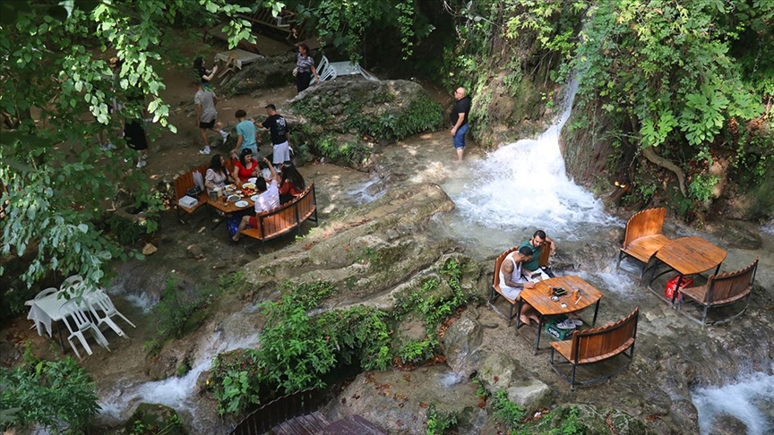
Harbiye Şelalesi
Doğanın kalbinde ferahlatıcı bir mola noktası.
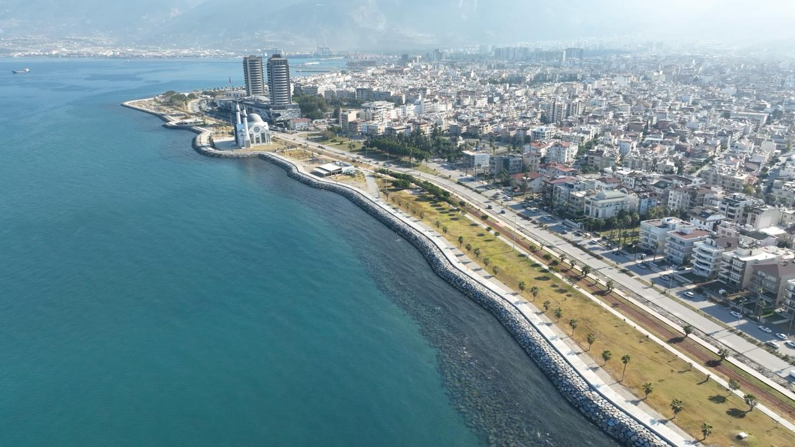
İskenderun Sahili
Maviyle yeşilin buluştuğu güzel sahil şeridimiz.
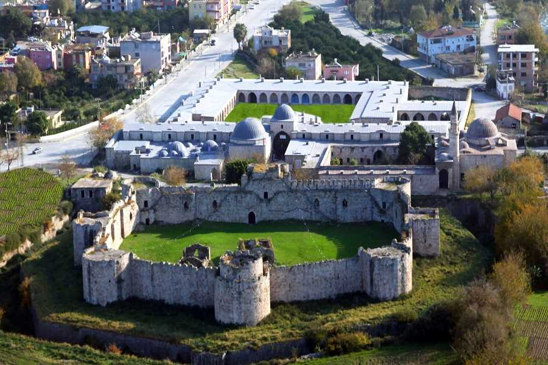
Payas Kalesi
Tarihe tanıklık eden muazzam savunma yapısı.
Daha Fazla Keşfet
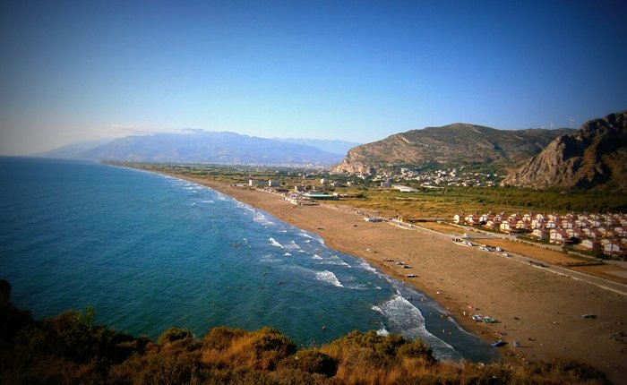
Samandağ Çevlik Sahili
Türkiye'nin en uzun sahilidir. İnce kumu, deniz kaplumbağalarının (Caretta caretta) üreme alanı olması ve sörf rüzgarlarıyla doğaseverler için eşsiz bir destinasyondur.
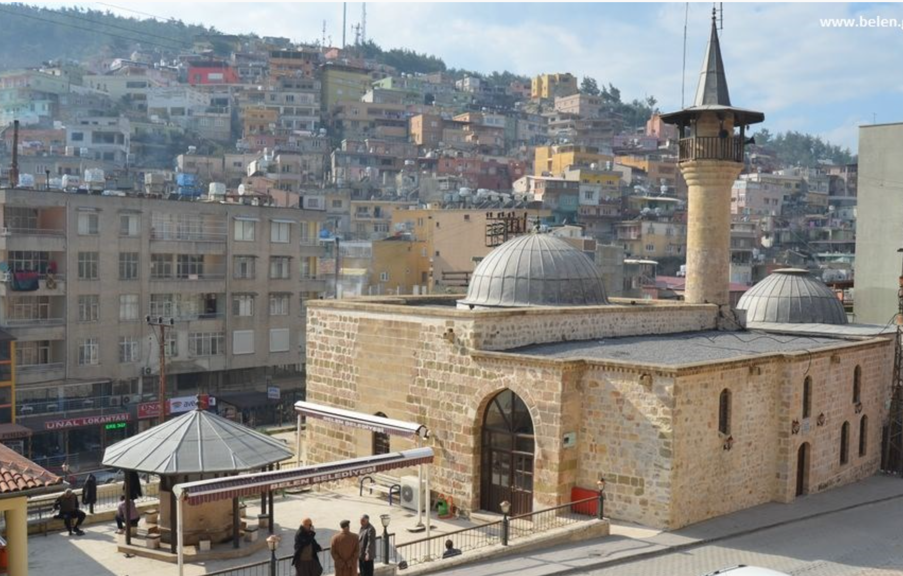
Kanuni Cami
Kanuni Sultan Süleyman'ın emriyle 1553 yılında (Hicri 959), Mısır seferi sırasında yaptırılmıştır. Caminin hemen yanında yine Kanuni tarafından yaptırılan bir kervansaray ve bir hamam bulunmaktadır.
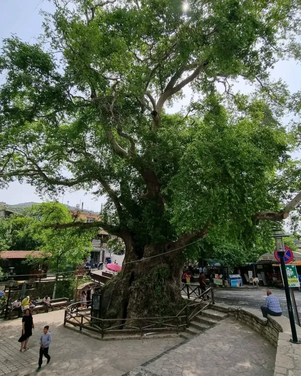
Musa Ağacı
Bölgenin en önemli doğal ve dini sembollerinden biri olan devasa bir çınar ağacıdır. Halk arasında 2000-3000 yıllık olduğuna inanılır. Gövde çapı yaklaşık 7,5 metre, çevre genişliği 20 metre ve yüksekliği 17 metredir.
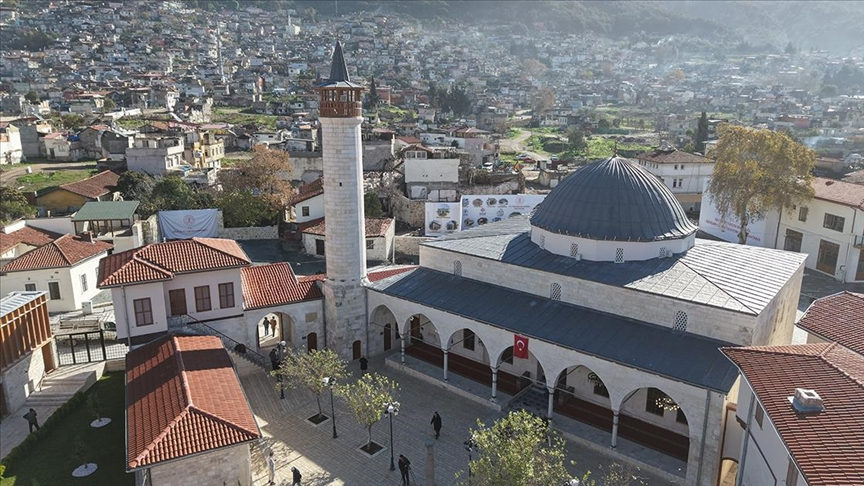
Habibi Neccar Camii
Anadolu sınırları içerisinde inşa edilen ilk cami olarak bilinir. Farklı inançlara sahip insanların bir arada huzurla yaşadığı Hatay'ın hoşgörü sembollerinden biridir.
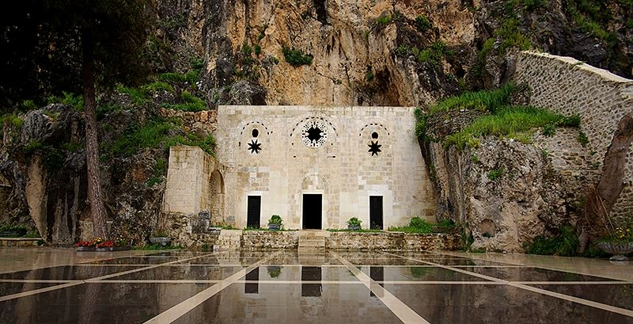
St. Pierre Kilisesi
Hristiyanlık kelimesinin dünyada ilk kez kullanıldığı yer olarak kabul edilir. Tarihi dokusu ve manevi atmosferiyle inanç turizmi açısından önemli bir merkezdir.
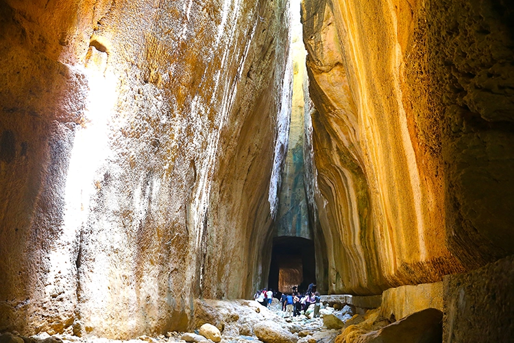
Titus Tüneli
Roma İmparatoru Vespasian'ın emriyle sel sularını yönlendirmek için dağ oyularak yapılmıştır. Tamamen insan gücüyle inşa edilmiş antik bir mühendislik harikasıdır.
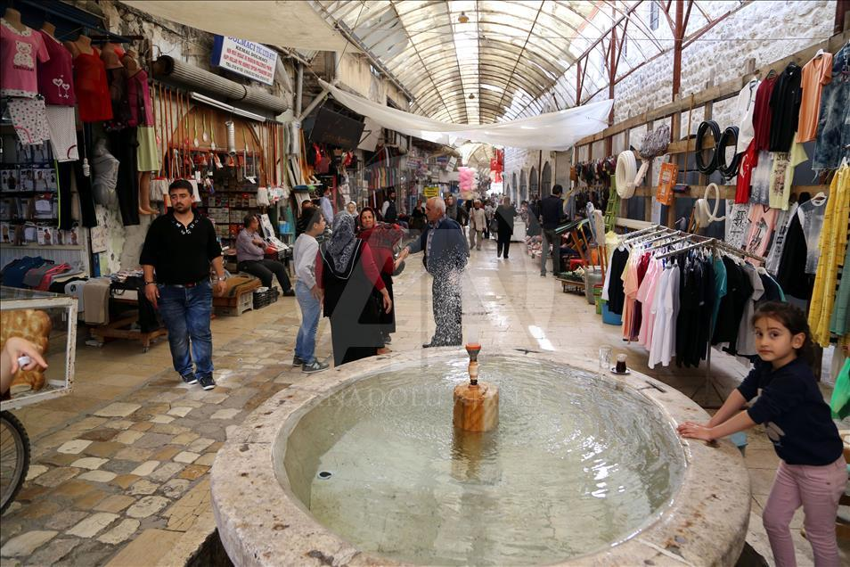
Tarihi Uzun Çarşı
Antakya'nın kalbi sayılan bu tarihi çarşıda yöresel ürünler satılır. Nostaljik atmosferiyle ziyaretçilerini asırlar öncesine götürür.
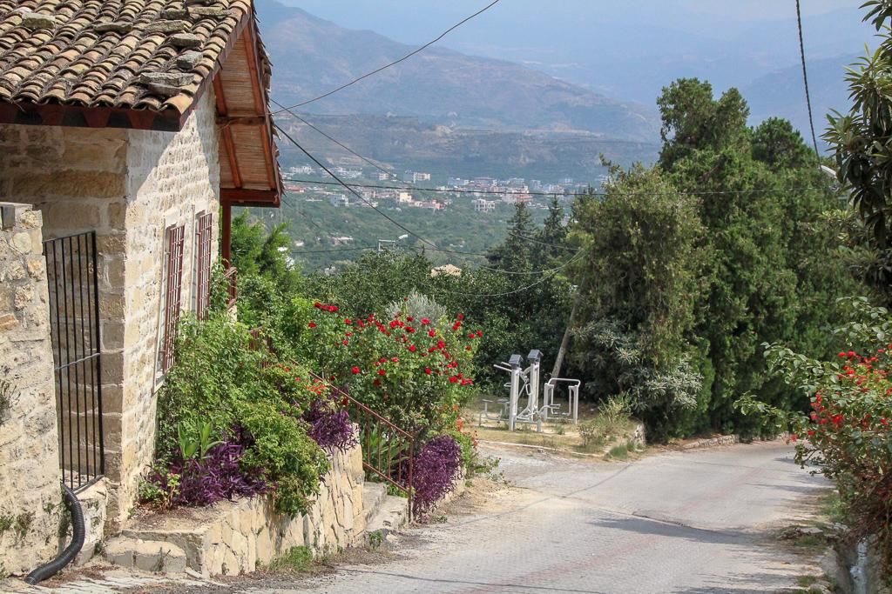
Vakıflı Köyü
Musa Dağı eteklerinde yer alan, organik tarımı ve kültürel dokusunu koruyan şirin bir yerleşim yeridir.
Eşsiz Yemek Kültürü
UNESCO tescilli "Gastronomi Şehri" unvanına sahip, zeytinyağı, nar ekşisi, biber salçası ve baharatların yoğun kullanıldığı 600'den fazla çeşit barındıran zengin bir mutfaktır. Kağıt kebabı, oruk, humus, cevizli biber, künefe ve biberli ekmek gibi lezzetlerle öne çıkan bu kültürde mezeler ve et yemekleri bir arada sunulur, meze çeşitleri çoktur. Bu zengin mutfak, Akdeniz ve Ortadoğu kültürlerinin birleşimiyle benzersiz bir lezzet yelpazesi sunar.